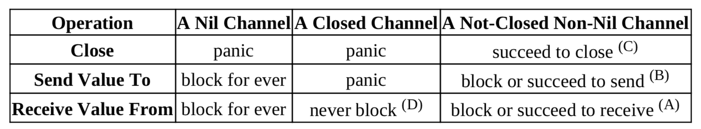

21. Channels - The Go Way to do concurrency synchronizations
Don't (let computations) communicate by sharing memroy, (let them) share memory by communicating (through channels).
五种操作(all these operations are already synchronized)：
- close(ch), ch must not be a receive-only channel.
ch <- v, send a value<-ch, receive a value from the channel- cap(ch), value buffer capacity, return int
- len(ch), query current number of values in the value buffer
We can think of each channel as maintaining 3 queues: - the receiving goroutine queue - the sending goroutine queue - the value buffer queue

// unbufferd demo
package main
import (
"fmt"
"time"
)
func main() {
c := make(chan int)
go func(ch chan<- int, x int) {
time.Sleep(time.Second)
ch <- x * x //block until the result is received.
}(c, 3)
done := make(chan struct{})
go func(ch <-chan int) {
n := <-ch //block until 9 is sent
fmt.Println(n)
time.Sleep(time.Second)
done <- struct{}{}
}(c)
<-done //block until a value is sent to done
fmt.Println("bye")
}
// buffered channel
package main
import (
"fmt"
"time"
)
// A never ending football game
func main() {
var ball = make(chan string)
kickBall := func(playerName string) {
for {
fmt.Println(<-ball, "kicked the ball.")
time.Sleep(time.Second)
ball <- playerName
}
}
go kickBall("John")
go kickBall("Alice")
go kickBall("Bob")
go kickBall("Emily")
ball <- "referee" //kick off 开球
var c chan bool //nil
<-c // blocking here forever
}
- Channel Element Values are Transferred by Copy。If the passed value size too large, use a pointer element type instead.
- A goroutine can be garbage collected when it has already exited.
- Channel send and receive operatoins are simple statements.
empty select-case code block select{} will make current goroutine stay in blocking state forever.
22 Methods in Go
Should a method be declared with pointer receiver or value receiver ?
- Too many pointer copies my cause heavier workload for garbage collector
- if value receiver type is Large , should use pointer receiver.
- declaring methods of both value receivers ans pointer receivers for the same base type is more likely to cause data races if the declared methods are called concurrently in multiple goroutines.
- values of the types in sync standard package should not be copied.
If it is hard to make a decisoin , just choose the pointer receiver way.
23 Interfaces in Go
type assert and type switch
- Values of []t can't be directly converted to []I, even if type T implements interface type I.
- Each method specified in a interface type corresponds to an implicit function.
37 Channel Use Cases
Use channels as Futures/Promises
Return receive-only channels as results
package main
import (
"fmt"
"math/rand"
"time"
)
func longTimeRequest() <-chan int32 {
r := make(chan int32)
go func() {
// simulate a workload
time.Sleep(time.Second * 3)
r <- rand.Int31n(100)
}()
return r
}
func sumSquares(a, b int32) int32 {
return a*a + b*b
}
func main() {
rand.Seed(time.Now().UnixNano())
a, b := longTimeRequest(), longTimeRequest()
fmt.Println(sumSquares(<-a, <-b)) // 3s 返回, a,b 并发执行的
}
Pass send-only channels as arguments
package main
import (
"fmt"
"math/rand"
"time"
)
func longTiemRequest(r chan<- int32) {
// simulate a worklaod
time.Sleep(time.Second * 3)
r <- rand.Int31n(100)
}
func sumSquares(a, b int32) int32 {
return a*a + b*b
}
func main() {
rand.Seed(time.Now().UnixNano())
ra, rb := make(chan int32), make(chan int32)
go longTiemRequest(ra)
go longTiemRequest(rb)
fmt.Println(sumSquares(<-ra, <-rb))
}
The first response wins
package main
import (
"fmt"
"math/rand"
"time"
)
func source(c chan<- int32) {
ra, rb := rand.Int31(), rand.Intn(3)+1
time.Sleep(time.Duration(rb) * time.Second)
c <- ra
}
func main() {
rand.Seed(time.Now().UnixNano())
beg := time.Now()
c := make(chan int32, 5) // must bufferd channel
for i := 0; i < cap(c); i++ {
go source(c)
}
// only frist resposne will be used
rnd := <-c
fmt.Println(time.Since(beg))
fmt.Println(rnd)
}
Use Channels for Notifications
Use blank struct{} as element types of the notification channels, size of type struct{} is zero, doesn't consume memory.
1-To-1 notification by sending a value to a channel
package main
import (
"fmt"
"math/rand"
"os"
"sort"
)
func main() {
values := make([]byte, 32*1024*1024)
if _, err := rand.Read(values); err != nil {
fmt.Println(err)
os.Exit(1)
}
done := make(chan struct{})
go func() {
sort.Slice(values, func(i, j int) bool {
return values[i] < values[j]
})
// notify sorting is done
done <- struct{}{}
}()
// do some other things
fmt.Println("other thing")
fmt.Println(values[0], values[len(values)-1])
}
1-To-1 notification by receiving a value from a channel
package main
import (
"fmt"
"time"
)
func main() {
done := make(chan struct{})
go func() {
fmt.Print("hello")
time.Sleep(time.Second * 2)
<-done
}()
// blocked here, wait for a notification
done <- struct{}{}
fmt.Println(" world")
}
slowers notify the faster waiting for notifications.
N-to-1 and 1-to-N notifications
package main
import (
"log"
"time"
)
// T type
type T = struct{}
func worker(id int, ready <-chan T, done chan<- T) {
<-ready // block here and wait a notification
log.Print("Worker#", id, " starts.")
// simulate a workload
time.Sleep(time.Second * time.Duration(id+1))
log.Print("Worker#", id, " job done.")
// notify main goroutine (n-to-1)
done <- T{}
}
func main() {
log.SetFlags(0)
ready, done := make(chan T), make(chan T)
go worker(0, ready, done)
go worker(1, ready, done)
go worker(2, ready, done)
// simulate an initialization phase
time.Sleep(time.Second * 3 / 2)
// 1-to-n notifications
ready <- T{}
ready <- T{}
ready <- T{}
// Being N-to-1 notified
<-done
<-done
<-done
}
更常见的使用 sync.WaitGroup 做 N-to-1，通过 close channels 实现 1-to-N.
Broadcast (1-To-N) notifications by closing a channel
上例中的三个发送 ready 可以直接换成一个 close(ready)
Timer: scheduled notification
package main
import (
"fmt"
"time"
)
func AfterDuration(d time.Duration) <-chan struct{} {
c := make(chan struct{}, 1)
go func() {
time.Sleep(d)
c <- struct{}{}
}()
return c
}
func main() {
fmt.Println("hi")
<-AfterDuration(time.Second)
fmt.Println("Hello!")
<-AfterDuration(time.Second)
fmt.Println("bye")
}
实际中使用 time.After
Use Channels as Mutex Locks
two manners to use one-capacity bufferd channels as mutex locks.
- Lock through a send, unlock through a receive
- Lock through a receive, unlock through a send
// lock through send
package main
import "fmt"
func main() {
mutex := make(chan struct{}, 1) // capacity must be one
counter := 0
increase := func() {
mutex <- struct{}{} // lock
counter++
<-mutex // unlock
}
const n = 1000
increase1000 := func(done chan<- struct{}) {
for i := 0; i < n; i++ {
increase()
}
done <- struct{}{}
}
done := make(chan struct{})
go increase1000(done)
go increase1000(done)
<-done
<-done
fmt.Println(counter) //2000
}
Use Channels as Counting Semaphores
Buffered channels can be used as counting semaphores. Counting semaphores can be viewed a multi-owner locks, can have most N owners at any time.
- Acquire ownership through a send, release through a receive
- Acquire ownership through a receive, release through a send
// acquire-through-receiving.go
package main
import (
"log"
"math/rand"
"time"
)
type Seat int
type Bar chan Seat
func (bar Bar) ServeCustomer(c int) {
log.Print("costomer#", c, " enters the bar")
seat := <-bar // need a seat to drink
log.Print("++ customer#", c, " drinks at seat#", seat)
time.Sleep(time.Second * time.Duration(2+rand.Intn(6)))
log.Print("-- customer#", c, " free seat#", seat)
bar <- seat // free seat and leave the bar
}
func main() {
rand.Seed(time.Now().UnixNano())
bar24x7 := make(Bar, 10) // bar24x7 has 10 seat
for seatId := 0; seatId < cap(bar24x7); seatId++ {
// None of the sends will blocks
bar24x7 <- Seat(seatId)
}
for customerId := 0; ; customerId++ {
time.Sleep(time.Second)
go bar24x7.ServeCustomer(customerId)
}
// sleeping != blocking
for {
time.Sleep(time.Second)
}
}
// channeltest/go101/acquire-through-sending.go
package main
import (
"log"
"math/rand"
"time"
)
type Customer struct{ id int }
type Bar chan Customer
func (bar Bar) ServeCustomer(c Customer) {
log.Print("++ customer#", c.id, " staring drinking")
time.Sleep(time.Second * time.Duration(3+rand.Intn(16)))
log.Print("-- customer#", c, " leaves the bar")
<-bar // leaves the bar and save a space
}
func main() {
rand.Seed(time.Now().UnixNano())
bar24x7 := make(Bar, 10) // bar24x7 has 10 seat
for customerId := 0; ; customerId++ {
time.Sleep(time.Second * 2)
customer := Customer{customerId}
bar24x7 <- customer
go bar24x7.ServeCustomer(customer)
}
for {
time.Sleep(time.Second)
}
}
Dialogue(Ping-Pong)
// channeltest/go101/two-goroutines-dialogue-through-channel.go
package main
import (
"fmt"
"os"
"time"
)
type Ball uint64
func Play(playerName string, table chan Ball) {
var lastValue Ball = 1
for {
ball := <-table //get the ball
fmt.Println(playerName, ball)
ball += lastValue
if ball < lastValue { // overflow
os.Exit(0)
}
lastValue = ball
table <- ball
time.Sleep(time.Second)
}
}
func main() {
table := make(chan Ball)
go func() {
table <- 1 // throw ball on table,开球
}()
go Play("A:", table)
Play("B", table)
}
Channel Encapsulated in Channel
We can use a channel type as the element of another channel type.
package main
import "fmt"
// 元素类型是一个 send only channel type chan <- int
var counter = func(n int) chan<- chan<- int {
requests := make(chan chan<- int)
go func() {
for request := range requests {
if request == nil {
n++
} else {
request <- n // take out
}
}
}()
return requests // implicitly converted to chan<- (chan<- int)
}(0)
func main() {
increase1000 := func(done chan<- struct{}) {
for i := 0; i < 1000; i++ {
counter <- nil
}
done <- struct{}{}
}
done := make(chan struct{})
go increase1000(done)
go increase1000(done)
<-done
<-done
request := make(chan int, 1)
counter <- request
fmt.Println(<-request) //2000
}
Check Lengths and Capacities of Channels
for len(c) > 0 {
value := <-c
// use value
}
for len(c) < cap(c) {
c <- aValue
}
Block the Current Goroutine Forever
We can use a blank select block select{} to block the current goroutine for ever.
Generally, select{} is used to prevent the main goroutine from exiting, for if the main goroutine exits, the whole
program will also exit.
package main
import "runtime"
func DoSomething() {
for {
// do something
runtime.Gosched() // avoid being greddy
}
}
func main() {
go DoSomething()
go DoSomething()
select {}
}
Try-Send and Try-Receive
A select block with one "default" branch and only one case branch is called a try-send or try-receive channel operation. Try-Send and Try-Receive operations never block.
package main
import "fmt"
func main() {
type Book struct{ id int }
bookshelf := make(chan Book, 3)
for i := 0; i < cap(bookshelf)*2; i++ {
select {
case bookshelf <- Book{id: i}:
fmt.Println("succeed to put book", i)
default:
fmt.Println("failed to put book")
}
}
for i := 0; i < cap(bookshelf)*2; i++ {
select {
case book := <-bookshelf:
fmt.Println("failed to get book", book.id)
default:
fmt.Println("failed go get book")
}
}
}
Check if a channel is closed without blocking the current goroutine
no values were ever(and will be) send to a channel, we can use the following code to (concurrency and safetly) check whether or not the channel is already closed without blocking the current goroutine.
// T is the element type of the corresponding channel type
func IsClosed(c chan T) bool {
select {
case <-c:
return true
default:
}
return false
}
Peak/burst limiting
limit number of concurrent request without blocking any requests
Another way to implement the first-response-wins use case
package main
import (
"fmt"
"math/rand"
"time"
)
func source(c chan<- int32) {
ra, rb := rand.Int31(), rand.Intn(3)+1
time.Sleep(time.Duration(rb) * time.Second)
select {
case c <- ra:
default:
}
}
func main() {
rand.Seed(time.Now().UnixNano())
// capacity should at least 1
c := make(chan int32, 1)
for i := 0; i < 5; i++ {
go source(c)
}
rnd := <-c //only the first response is used
fmt.Println(rnd)
}
Timeout
请求超时返回 error
func requestWithTimeout(timeout time.Duration) (int, error) {
c := make(chan int)
// may need a long time to get the response.
go doRequest(c)
select {
case data := <-c:
return data, nil
case <-time.After(timeout):
return 0, errors.New("timeout")
}
}
Ticker
We can use the try-send mechanism to implement a ticker.
package main
import (
"fmt"
"time"
)
// Tick implement, use time.Tick in practice, just show how to implement
func Tick(d time.Duration) <-chan struct{} {
// capacity of c is best set as one
c := make(chan struct{}, 1)
go func() {
for {
time.Sleep(d) // 一秒向 c send 一个值
select {
case c <- struct{}{}:
default:
}
}
}()
return c
}
func main() {
t := time.Now()
// 一秒输出一次
for range Tick(time.Second) {
fmt.Println(time.Since(t))
}
}
Rate Limiting
use try-send to do rate limiting(with the help of a ticker).
package main
import (
"fmt"
"time"
)
// https://github.com/golang/go/wiki/RateLimiting
type Request interface{}
func handle(r Request) { fmt.Println(r.(int)) }
const RateLimitPeriod = time.Minute
const RateLimit = 200 // 一分钟最多200个请求
func handleRequests(requests <-chan Request) {
quotas := make(chan time.Time, RateLimit)
go func() {
tick := time.NewTicker(RateLimitPeriod / RateLimit)
defer tick.Stop()
for t := range tick.C {
select {
case quotas <- t:
default:
}
}
}()
for r := range requests {
<-quotas
go handle(r)
}
}
func main() {
requests := make(chan Request)
go handleRequests(requests)
for i := 0; ; i++ {
requests <- i
}
}
Switches
sending a value to or receiving a value from a nil channel are both blocking operations.
package main
import (
"fmt"
"os"
"time"
)
type Ball uint8
func Play(playerName string, table chan Ball, serve bool) {
var receive, send chan Ball
if serve {
receive, send = nil, table
} else {
receive, send = table, nil
}
var lastValue Ball = 1
for {
select {
case send <- lastValue:
case value := <-receive:
fmt.Println(playerName, value)
value += lastValue
if value < lastValue {
os.Exit(0)
}
lastValue = value
}
// switch on/off
receive, send = send, receive
time.Sleep(time.Second)
}
}
func main() {
table := make(chan Ball)
go Play("A:", table, false)
Play("B:", table, true)
}
Control code execution possibility weights
package main
import "fmt"
func main() {
foo, bar := make(chan struct{}), make(chan struct{})
close(foo)
close(bar)
x, y := 0.0, 0.0
f := func() { x++ }
g := func() { y++ }
for i := 0; i < 100000; i++ {
select {
case <-foo: // foo 这里大概调用次数是 bar 的两倍
f()
case <-foo:
f()
case <-bar:
g()
}
}
fmt.Println(x / y) // 大概是 2
}
Select from dynamic number cases
reflect also provides TrySend and TryRecv functions to implement one-case-plus-default select blocks.